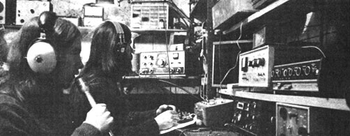
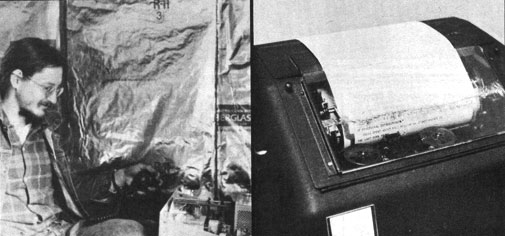
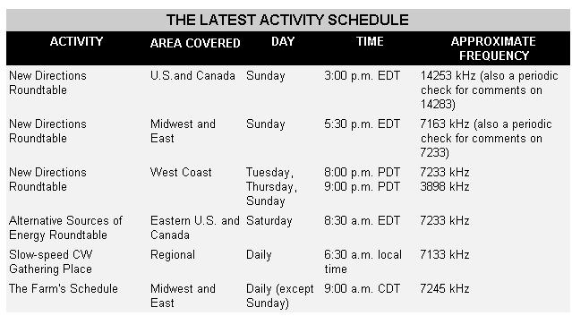

New Directions Radio
Find out if ham radio is really a practical ad useful tool for an intentional community..
By Copthorne Macdonald
July/August 1974
RADIO ON THE FARM
Is ham radio really a practical and useful tool for an intentional community? The folks at The Farm think so! That group, as described on the back of the "QSL" card the Radio Crew sends out, "is a religious community of 800 people in southern Tennessee . . . the largest and most successful beatnik community in the world, self-supporting and at peace with its neighbors". The Farm's members are into the third summer on their 1,700 acres in Summertown, and-as Albert (WB4BWR) says-"It looks like we're here to stay."
The community's first major use of radio was to keep in touch with its rock group, The Farm Band, which tours all over the country. This is especially important for Ina May-The Farm's head midwife-who travels with the band and uses its ham rig to talk with the other midwives back home. The Summertown gang also has a Windmill Crew working on the development of "a low-cost, dependable home lighting system", and Albert is active in our Saturday morning Alternative Sources of Energy Net.
Another use of radio is to link the original Farm with a related group of the same name that was recently started in Ettrick, Wisconsin by 15 people from Minneapolis. Robert (WB9NRY) keeps daily schedules with the Tennessee folks at 9 a.m. CDT on 7245 kHz . . . a great opportunity to discuss all sorts of common concerns, from midwifery to soy milk. Others with similar interests are invited to join in these on-the-air get-togethers.
The Tennessee community already has a good number of radio freaks:
William (K4IAP), Gary (WA4ZDX), another William (WN4GFE) and Patrick (WA4GFI). And here's the latest news from Albert: "Our radio crew is growing now . . . there's two more cats who just took their tests two weeks ago. That'll bring the total up to seven hams on The Farm. I'm really hot to set up an SSTV [slow-scan television] rig here, so maybe we'll be seeing you soon. It'd really be great to have a TV link. with Wisconsin. There are some more 'Farms' starting up, one in Kentucky and one I just heard about in West Virginia, and they've both got guys studying for their ham tickets. Looks like a far-out time ahead."
(By the way, the community has its own photography and print shop and has published Hey, Beatnik! which tells all. It's $2.10 postpaid from The Book Publishing Company, The Farm, Summertown, Tennessee 38483.)
WORKING TOWARD THAT LICENSE
The amateur radio page in Hey, Beatnik! says, "it isn't that hard to get a ham license." And it really isn't. Among my recent letters is one from Curt Barnes of Santa Monica, who passed his exam after getting turned on by one of MOTHER's New Directions columns. Curt writes: "The article got me interested, and-since you made getting a license sound easy--I rushed out and found a great radio course and have now passed my General Class test." I'm sure some people do have difficulties, but the usual problem is simply getting cranked up enough to get started.
I never cease to be amazed by the number of Catholic nuns who have ham licenses. Often this comes about simply as the result of the mother superior saying to one of the sisters, "We should establish amateur radio contact with others of our order. Will you please get a license so that we can do so?" The sister complies, and before long there are several in the convent hamming away. In no sense are these women technofreaks, but neither are they intimidated by the licensing process.
If you and your friends could make good use of ham radio, why not bring up the subject next time you get together? Perhaps one of you will be willing to make the commitment and do it. (Track down a license preparation class offered by a radio club, as Curt Barnes did, or check MOTHER NO. 25 for "how to's" if you have to study by yourself.)
ENERGY NOTES
Ed Noll (W3FQJ) is a "technical writer's writer" who's had my admiration for years. He's authored a big stack of books on everything from closed-circuit TV to getting an FCC Commercial license, and contributes a superb technical column to Ham Ra dio magazine. What a gas it was to hear from him and find out that he's also a MOTHER reader, a nature buff and-as far as I know-the first ham to power a rig with solar energy. (The idea has been experimented with on and off since the introduction of transistors, according to D.S. Halacy, Jr. His book Solar Science Projects-60 cents in paperback from Scholastic Book Services-tells how to build a simple sun-powered radio.-MOTHER.) Ed successfully operates a 5-watt Argonaut transceiver and plans to describe his solar power supply in detail in a future issue of Ham Radio. He also intends to use his column to further the cause of harnessing the sun's energy.
I might mention that Ed has produced a delightful book on the lives and habits of birds, with bits of philosophical insight touching on man and our shared planet. He normally has copies for sale when he gives his free nature slide talks, but will be glad to send one to any reader of MOTHER for a buck (half price). Ed's address is Box 75, Chalfont, Pennsylvania 18914.
The Alternative Sources of Energy Net has moved to Saturday mornings on 40 meters for better coverage and less interference. The new schedule is 8:30 a.m. EDT on about 7233 kHz.
Here's what some ASE Net regulars are up to: Allen Owen (WA30WT, Montoursville, Pennsylvania) is helping a friend design a water wheel. Although the stream they plan to harness isn't very swift, falling only three feet as it crosses the property, calculations indicate the possibility of producing 200 steady watts. Ray Martin (WA5CCZ, Crosby, Texas) is powering his rig from a one-lunger, methane-fueled engine (he's also had experience with Savonius rotor wind generators).
Off in Baudette, Minnesota, Frank Thompson (WOOD)-who installed 18 of the famous Jacobs windplants one summer back in the 30's-is rewinding an automobile alternator for 110 volts as part of his wind generator project. Ken Chaffee (WA10XR, Ashaway, Rhode Island) recently came up with news of a turbine-style wind device being developed in his state, and Jim Stamper (WA4HUB, Roanoke, Virginia) tracked down some info on NASA-Langley's "eggbeater style" vertical axis unit.
THE HAWAII HEALTH NET
Jim Stamper and I attended the Black Hills Values Conference in May. While the results were somewhat disappointing in terms of hard programs coming out of the session, some good things happened. One of them was meeting Jim and Marge Craig, who are coordinating the mainland end of the Hawaii Health Net . . . a group started by Dr. Walter Strode of the Straub Clinic in Honolulu and concerned with rethinking the subject of health care.
As the Craigs describe the net in their book, Synergic Power, "Net people are seeking to transform present disease-oriented medical services to services based on the concept of health as a way of life. They are also seeking to better meet specific health needs by shifting the focus of responsibility from a physician-centered system to a patient-centered system. This means that patients become more involved as partners in maintaining and restoring their own health." (If you're into changing the world through cooperation rather than force or confrontation, you'll want to read the Craigs' book. Order it from P.O. Box 9096, Berkeley, California 94709, $2.70 postpaid.)
Communication within the net has so far been mostly by mail. Now, however, we're setting up Hawaii-mainland ham radio links and other connections between individuals and groups in the continental U.S. Contact me if you'd like to get involved.
THE RTTY TECHNICAL GROUP
Teletype transmission by radio (RTTY for short) has the potential of combining many of the advantages of the printed media with the high delivery speed and low delivery cost of ham radio. While teleprinters are intricate mechanical beasts similar to electric typewriters, they're also rugged long-life instruments (akin to metal sewing machines in this respect). They're relatively inexpensive too, and with the right adapter unit can be used to send typed material over the dial telephone network as well as over the air. They can also serve as remote computer terminals to tie in with systems such as the one mentioned in my column in MOTHER NO. 27.
The big problem is that such machines aren't available in a nice, neat, packaged form with all the other bits and pieces needed to make an operating system. If you're a real technofreak, deeply into mechanical and electronic gadgetry, you can refurbish a surplus teleprinter, build the electronic circuitry to go with it and get on the air with RTTY at fairly low cost. If you're not into this technical stuff, you're out of luck.
Mitt Nodacker (WA7TFE, Box 8557, Pocatello, Idaho 83209) would like to act as coordinator and clearing-house for an RTTY Technical Group with the long-term goal of solving the technical and logistical problems that stand in the way of a national freaky teletype network. On the kind of hookup he envisions, transmission and reception of newsletters and reference material, conferences and even computer systems tie-ins would be possible right from the homestead and between change-oriented groups and individuals. What's proposed, in short, is a fast-turnaround system for the exchange of written material . . . and one that would be able to deliver information automatically, even with no one present at the receiving location.
As Mitt says, "RTTY is presently a tinkerer's dream . . . but what we're talking about is practical use, not tinkering:" The program is very fluid at the moment. Phase One will start with on-the-air testing and equipment-designing activities, which will (let's hope) be followed by some sort of cottage industry engaged in refurbishing used machines and in building the "black boxes" designed during the first phase. So, technofreaks, how about getting to work so that the non-technofreaks can one day take part in a multi-input print-at-a-distance network? If this project interests you, contact Mitt.
Peace,
Cop Macdonald (WOORX)
P.O. Box 483
Rochester, Minn. 55901
 Ham station on The Farm in Tennessee is operated by Albert (WB4BWR) and William (K4IAP) during a daily contact with The Farm in Wisconsin |
 Robert (WB9NRY) on The Farm in Wisconsin ... and the kind of teleprinter that Mitt Nodacker (WA7TFE) dreams of adding to the alternative net. |
 |
|
 |
 |
|